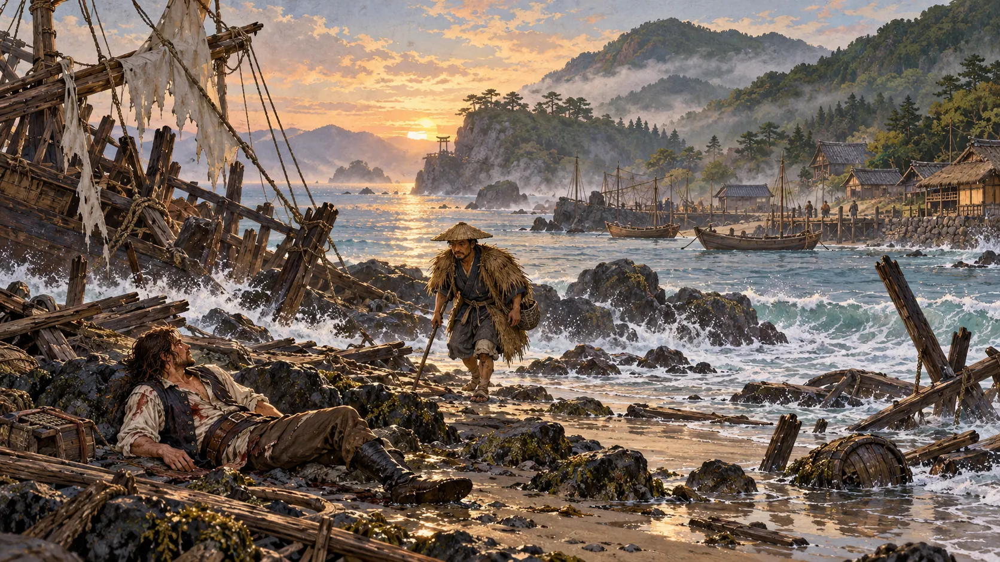

Water Isolation Lab

Prove the construction before scaling it
Toggle Show water mask. Cyan marks pixels eligible to move; all other pixels retain the unmodified painting. The starter mask is deliberately conservative.
Choose Edit mask → Protect solid, then brush over any stable object inside cyan. Use Add water to enlarge a safe water region. Changes update live.
Export a transparent shore-water-mask.png. This is a production asset we can refine and reuse for different animation techniques without touching game logic.
Quality criterion: static rocks, ropes, figures, boats, and shoreline must not shift. The sample-point check is a safety check, not a substitute for visual mask review. A true finished water layer will also need separate water artwork and foreground occlusion around complex rock edges.